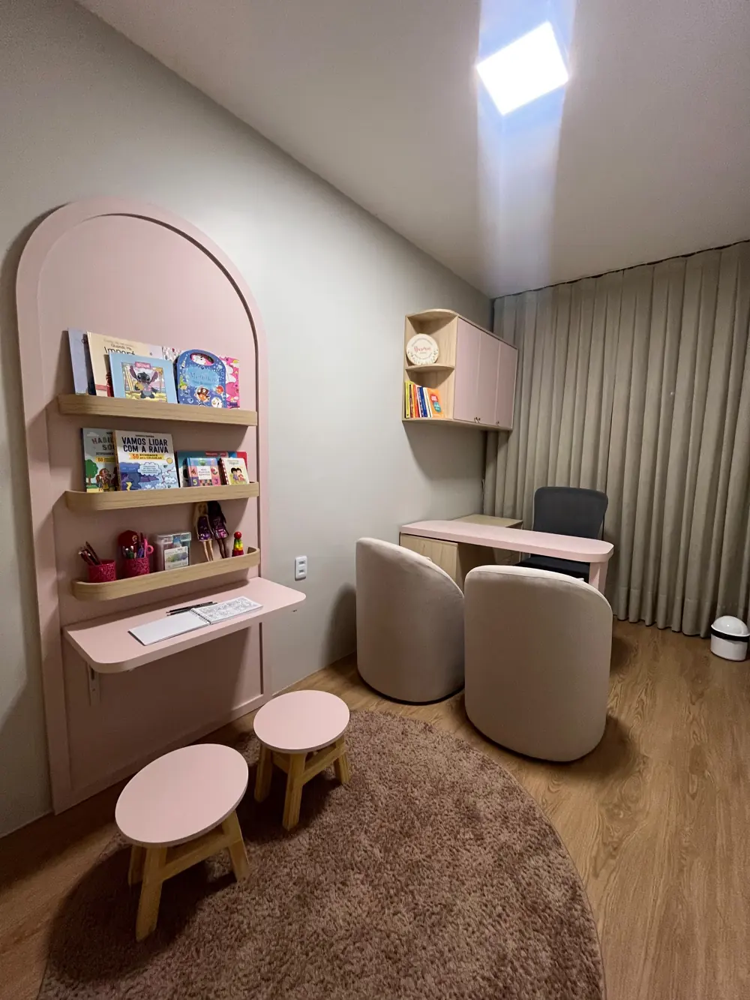
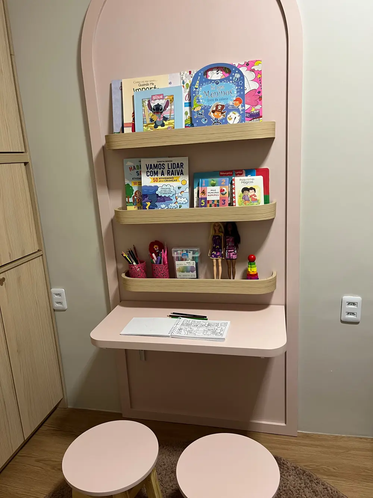
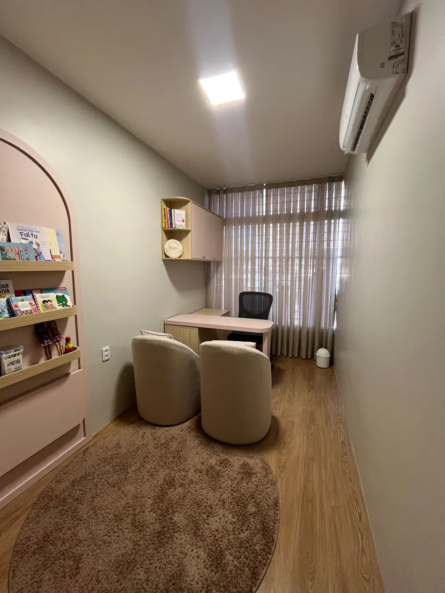
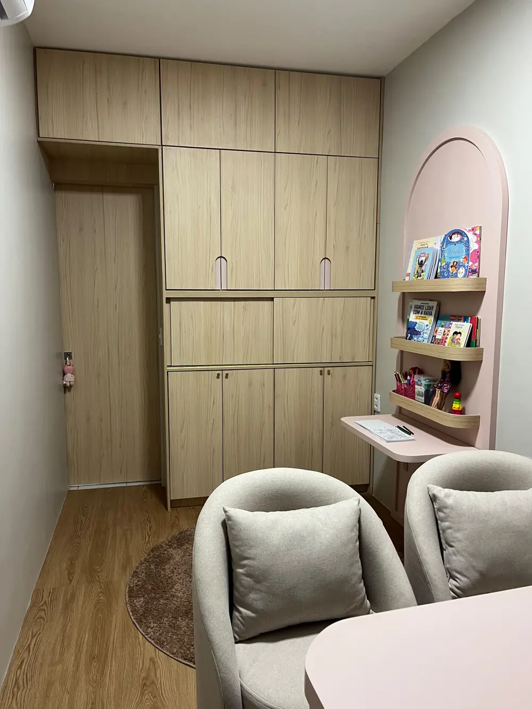

Olá, eu sou Yasmin Pinheiro
Sou psicóloga clínica e, ao longo da minha trajetória, venho me dedicando ao cuidado psicológico de crianças, adolescentes, jovens e adultos, além do acompanhamento e orientação de pais e familiares.
Acredito que a psicoterapia é um espaço de acolhimento, escuta e construção de novas possibilidades. Meu trabalho busca compreender cada pessoa em sua singularidade, considerando sua história, suas relações, seus pensamentos, emoções e os desafios presentes em cada fase da vida.
Minha atuação é fundamentada principalmente na Terapia Cognitivo-Comportamental (TCC) e na Análise do Comportamento, utilizando estratégias baseadas em evidências e adaptadas às necessidades e objetivos de cada paciente.
Minha formação inclui especializações em Intervenção ABA para Autismo e Deficiência Intelectual e Neuropsicologia, além de formação em Terapia Cognitivo-Comportamental, com aprofundamento no atendimento de crianças e adolescentes.
No trabalho com o público infantil, valorizo o brincar, a construção do vínculo e o respeito ao ritmo e à individualidade de cada criança. Com adolescentes, jovens e adultos, busco construir um espaço seguro e colaborativo para compreender dificuldades, desenvolver recursos emocionais e comportamentais e encontrar formas mais saudáveis de lidar com as situações da vida.
Também considero a participação da família um aspecto importante quando o processo envolve crianças e adolescentes, oferecendo orientação aos responsáveis para que possam compreender melhor as necessidades do filho e favorecer mudanças também no ambiente familiar.
Cada pessoa chega à terapia com uma história única. Por isso, meu trabalho é construído de forma individualizada, com ética, acolhimento, escuta e compromisso com o desenvolvimento de cada paciente.
Meu propósito é oferecer um espaço seguro para que você possa se compreender melhor, desenvolver novas habilidades e construir mudanças que façam sentido para a sua vida.
Como funciona para começar
- Você manda uma mensagem no WhatsApp. Pode ser só um “oi, preciso conversar”.
- A Yasmin responde com os horários disponíveis.
- A primeira conversa serve para entender o que motivou a busca e ouvir você, inclusive podendo levar em conta o que você escreveu sobre o motivo do contato.
- A partir daí, ela orienta sobre o acompanhamento e a forma mais adequada de conduzir.
Como posso cuidar de você
Cada pessoa chega de um jeito. Veja os caminhos de cuidado e, se ficar em dúvida por onde começar, chame no WhatsApp que a gente entende juntos.
Psicoterapia
Um espaço de acolhimento e escuta para crianças, adolescentes, jovens e adultos, no ritmo de cada pessoa.
Orientação de pais
Apoio e direcionamento para que a família entenda as necessidades do filho e favoreça mudanças também em casa.
Supervisão clínica
Acompanhamento e troca sobre casos clínicos para quem atua ou está se formando na psicologia.
Visita escolar
Contato com a escola para entender o dia a dia da criança ou do adolescente e alinhar o cuidado com a família.
Oficinas terapêuticas
Atividades em grupo, com propostas pensadas para desenvolver habilidades de um jeito leve e prático.
Avaliação neuropsicológica
Uma investigação de como atenção, memória e aprendizagem funcionam, para orientar o cuidado no dia a dia.
As perguntas que todo mundo faz antes de chamar
Respostas diretas. Se a sua dúvida não estiver aqui, chame no WhatsApp.
Como eu sei que a psicóloga vai manter sigilo sobre as informações da minha família?
Desde o primeiro dia de atendimento a Yasmin age com a ética de manter sigilo profissional, previsto no Código de Ética Profissional do Psicólogo (Resolução CFP nº 010/05, art. 9º). Isso significa que o que é conversado nas sessões fica protegido com o máximo de cuidado e sigilo. No atendimento de crianças e adolescentes, os responsáveis recebem o que for necessário para cuidar do filho, preservando a confiança dele no processo. Como em toda a psicologia, existem situações excepcionais previstas no Código de Ética, como risco grave à vida ou à segurança, em que compartilhar informações pode ser necessário. Dúvidas sobre esse tema podem ser conversadas diretamente com a Yasmin pelo WhatsApp antes mesmo de iniciar a consulta, e ela incentiva você a tirar todas as suas dúvidas.
Como faço para marcar? Tem horário essa semana?
É só chamar no WhatsApp e contar, em poucas palavras, ou da forma que for mais confortável para você sobre o que está acontecendo. A Yasmin responde com os horários disponíveis. Como a agenda muda de semana para semana, a disponibilidade é confirmada direto no contato.
Quanto custa?
O atendimento é particular. Os valores e as condições são passados diretamente pelo WhatsApp, antes de começar, para que você decida com todas as informações.
Funciona mesmo online? É sério?
Sim. O atendimento psicológico online é regulamentado pelo Conselho Federal de Psicologia (Resolução CFP 9/2024) e segue o mesmo Código de Ética e o mesmo sigilo profissional do atendimento presencial.
Criança faz terapia online?
Pode, com a autorização de pelo menos um dos responsáveis legais. A Yasmin avalia caso a caso se o formato online é adequado para a criança ou o adolescente e adapta os recursos à idade.
O que eu preciso para a sessão online?
Internet estável, um celular, tablet ou computador com câmera e microfone, e um lugar tranquilo onde a conversa possa acontecer com privacidade. A plataforma e os detalhes de acesso são combinados no agendamento.
Moro em outra cidade ou estado. Consigo ser atendido?
Sim. O atendimento online permite atender de qualquer cidade do Brasil, desde que haja internet e o horário combine com a agenda. Se você mora fora do Brasil, chame no WhatsApp para confirmar se é possível. Para verificar a disponibilidade, é só chamar.
Onde fica o consultório?
Rua Oswaldo Cruz, 1660, Fortaleza, CE. O mapa e o botão de rota estão na seção “Onde a gente se encontra”.
Como saber se eu ou meu filho precisamos de acompanhamento psicológico?
Você não precisa ter certeza de que existe um diagnóstico ou saber exatamente o que está acontecendo para buscar orientação. Mudanças persistentes de comportamento, emoções muito intensas, dificuldades de socialização, insegurança, isolamento ou desafios na escola e na rotina podem ser motivos para conversar com uma psicóloga. O primeiro contato ajuda a compreender a situação e avaliar quais caminhos fazem sentido para a criança e para a família.
Como funciona a primeira consulta?
A primeira conversa é uma oportunidade para entender o que motivou a busca, conhecer um pouco da história da criança ou do adolescente e ouvir as preocupações da família. A partir dessa escuta, a profissional pode orientar sobre a necessidade de acompanhamento e sobre a forma mais adequada de conduzir o processo. O formato e os detalhes da primeira consulta devem ser confirmados diretamente com a Yasmin no agendamento.
Para quem é o atendimento? Tem idade certa?
A Yasmin atende crianças, adolescentes, jovens e adultos. Crianças e adolescentes são atendidos com a autorização e a participação da família; jovens e adultos podem procurar por conta própria. A linguagem e os recursos mudam conforme a idade e a necessidade de cada pessoa. Para confirmar se o atendimento é adequado ao seu caso, chame no WhatsApp.
Os pais participam do acompanhamento psicológico?
A família pode ter um papel importante no cuidado psicológico de crianças e adolescentes. Além do atendimento da criança ou do adolescente, a orientação aos responsáveis pode ajudar a compreender melhor as necessidades do filho e a oferecer apoio no dia a dia. A participação dos pais e a frequência dos encontros devem ser combinadas com a Yasmin de acordo com cada caso.
O que devo fazer se ainda não sei exatamente o que meu filho precisa?
Você pode começar contando o que tem observado: uma mudança de comportamento, uma dificuldade na rotina, uma preocupação com o desenvolvimento ou simplesmente a sensação de que precisa de orientação. Não é necessário chegar ao primeiro contato com todas as respostas. A conversa inicial pode ajudar a organizar essas ideias e identificar o próximo passo mais adequado.
Psicoterapia infantil precisa de encaminhamento médico?
Não é obrigatório. Muitos pais procuram o atendimento por conta própria, ao notar mudanças de comportamento, dificuldades escolares ou momentos de transição, como uma mudança de escola ou uma separação na família. Um encaminhamento de pediatra ou da escola pode ajudar a contextualizar a situação, mas não é pré-requisito para iniciar o acompanhamento.
Por quanto tempo costuma durar um processo de psicoterapia infantil?
Não existe um prazo fixo. O tempo varia conforme a idade da criança, o motivo da busca e a resposta ao processo terapêutico. Algumas situações mais pontuais evoluem em poucos meses, enquanto questões mais estruturais podem levar mais tempo. Isso costuma ser reavaliado periodicamente ao longo do acompanhamento, junto com a família.
Meu filho não quer ir ao psicólogo, e agora?
É comum que crianças e adolescentes cheguem resistentes, principalmente quando não entendem bem o motivo da consulta. Parte do trabalho inicial é construir esse vínculo de confiança aos poucos, sem forçar a fala ou a exposição do que a criança ainda não está pronta para falar. O acolhimento faz parte do processo desde o primeiro encontro.
O atendimento inclui crianças com laudo de TEA, TDAH ou outras condições?
Sim, o atendimento pode incluir crianças, adolescentes, jovens e adultos neurodivergentes, com abordagem adaptada às necessidades específicas de cada caso. Entre em contato pelo WhatsApp para conversar sobre a situação da criança e entender melhor como o acompanhamento pode ser conduzido.
Como é a sessão online
- A Yasmin combina com você a plataforma da sessão.
- Para crianças e adolescentes, um responsável autoriza o atendimento.
- No dia, é só entrar no horário combinado, de um lugar tranquilo e com internet.
Agende sua Consulta
Preencha o que quiser e envie pelo WhatsApp. Nada é obrigatório, porém o nome e o motivo são essenciais para um atendimento personalizado desde o começo.
Formulário de Agendamento
Entre em contato para consultar disponibilidade e informações
Atendimento presencial em Fortaleza.
Atendimento online, por vídeo, de qualquer cidade do Brasil.
1 hora a menos: maior parte do AM, MT, MS, RO e RR. 2 horas a menos: AC e oeste do AM. 1 hora a mais: Fernando de Noronha. Fora do Brasil, a Yasmin combina o horário com você pelo WhatsApp.
Onde a gente se encontra
Um espaço pensado para crianças, jovens e famílias se sentirem em casa desde a chegada. Conheça o consultório e veja no mapa como chegar.



